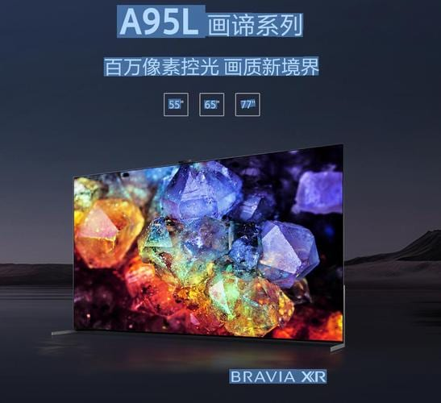

索尼 A95L（QD-OLED）

索尼第二代 QD-OLED 旗舰电视，XR 认知芯片调校下色彩与亮度俱佳，被许多发烧友视为画质天花板之一，搭配 PS5 与家庭影院都有顶级体验，是高端客厅的标杆之选。
客观评测
A95L 采用三星 Display 第二代 QD-OLED 面板，配合 XR 认知芯片与 XR 特丽魅彩 Max 色彩技术。实测峰值亮度较上代提升明显，色域覆盖广且色彩过渡自然，暗场深邃无漏光，可视角度接近完美。支持 4K 120Hz、VRR、ALLM 与杜比视界，HDMI 2.1 接口满足次世代主机需求。屏幕声场旗舰版音质在电视内置音响中属上乘。综合画质表现处于消费级电视顶端阵营。
主观点评
第一次用它看 4K 蓝光的震撼感很难形容：黑是纯粹的黑，霓虹灯的色彩亮得像要溢出屏幕，连人脸的肤色都更有质感。它对片源也宽容，流媒体压缩画面经 XR 芯片处理后依旧耐看。价格确实让人肉疼，但对把客厅当家庭影院的人来说，它属于「一次到位」的选择——看完它，别的电视总觉得差了口气。
优点与不足
- QD-OLED 面板色彩通透、亮度充足，画质第一梯队
- XR 芯片调校成熟，低码率片源也能救回来
- PS5 兼容特性完善，游戏体验极佳
- 价格高昂，尤其大尺寸
- 系统内置广告与本土化体验一般
- 满亮度下烧屏风险需注意使用习惯
参数规格
| 屏幕 | 55/65/77 英寸 QD-OLED 面板 |
|---|---|
| 面板 | QD-OLED（量子点 OLED），像素级控光 |
| 分辨率 | 3840×2160（4K） |
| 刷新率 | 120Hz，支持 VRR、ALLM |
| 亮度 | 峰值亮度约 1300 尼特（视尺寸与内容） |
| 芯片 | XR 认知芯片，XR 特丽魅彩 Max |
| 系统 | Google TV（国行为本土化系统） |
| 接口 | HDMI 2.1 ×2（48Gbps）、HDMI 2.0 ×2、USB ×2 |
| 音频 | 银幕声场旗舰版，多声道屏幕声场 |
| HDR | Dolby Vision、HDR10、HLG |